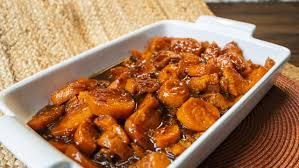

Sweet Potatoes

Just like candy
Southern Candied Yams bring that feel-good magic to the table. Imagine this: tender,
sweet yams bathed in a sweet buttery glaze, with warm hints of cinnamon and vanilla
filling the kitchen. I’m telling you, this dish doesn’t just sit on the side, it demands attention.
Ingredients
- 1 large bag of sweet Potatoes
- 1 pack of salted butter
- Cinnamon to taste
- 1/4 cup of nutmeg
- 1/2 cup of brown sugar
- 1/4 cup of granulated sugar
- 1/8 cup of vanilla extract
- Preheat your oven to 400°F.
- Peel and slice sweet potatoes into 1/2 inch pieces, then arrange
them in a greased baking dish.
- In a saucepan, melt the butter over medium-low heat and stir in sugar,
spices, and vanilla until smooth
- Pour mixture over sweet potatoes, mix them up a little and cover with
foil, and bake for 45 minutes.
- Increase the heat to 425°F, remove the foil, and bake for another
15 minutes for a beautiful caramelized finish.
Home